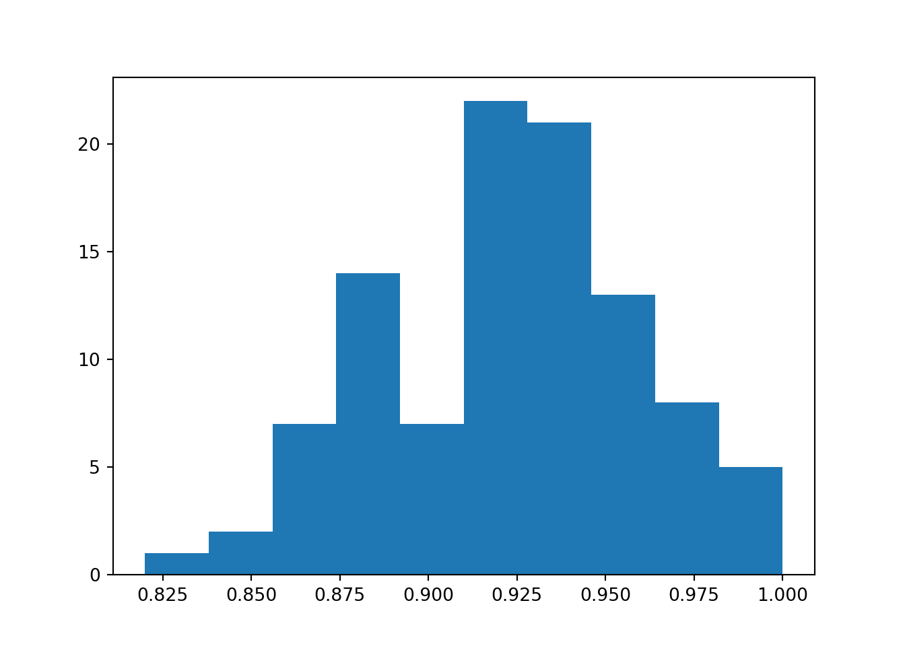
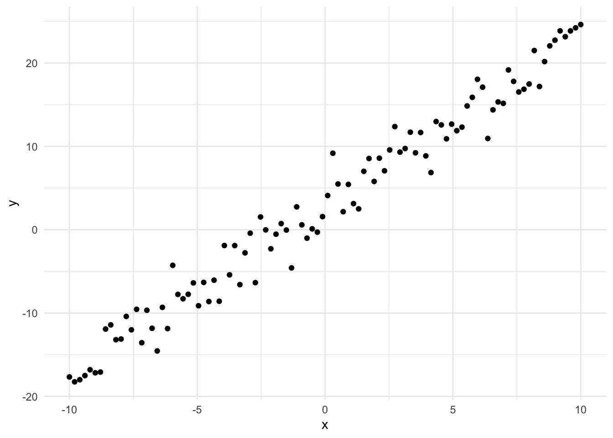
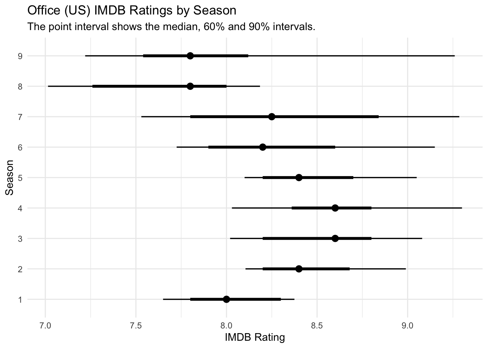
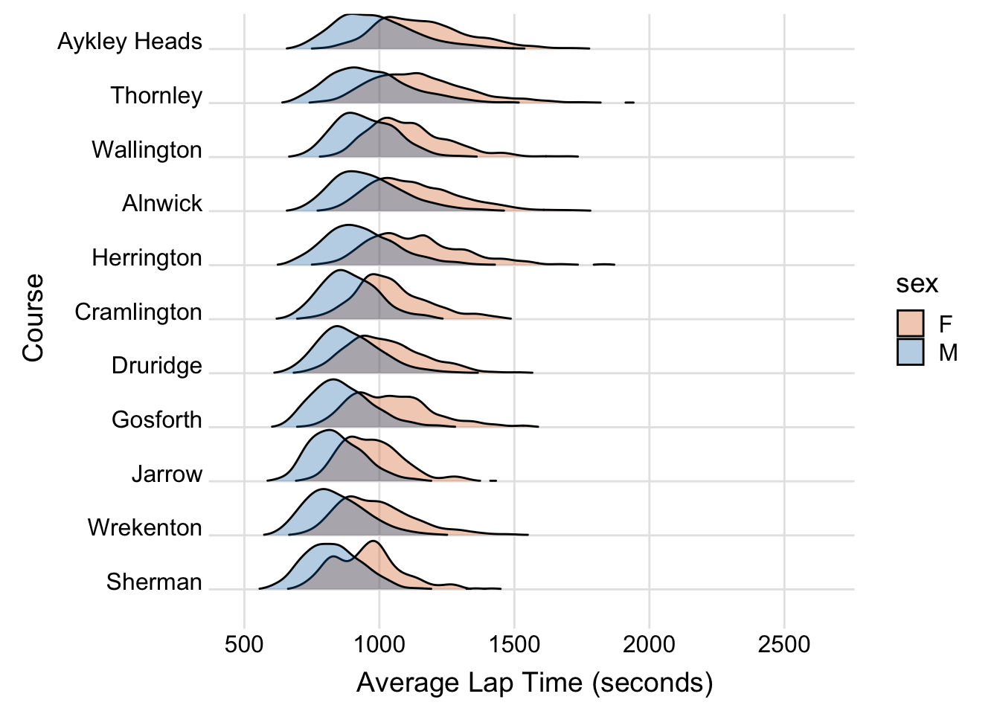
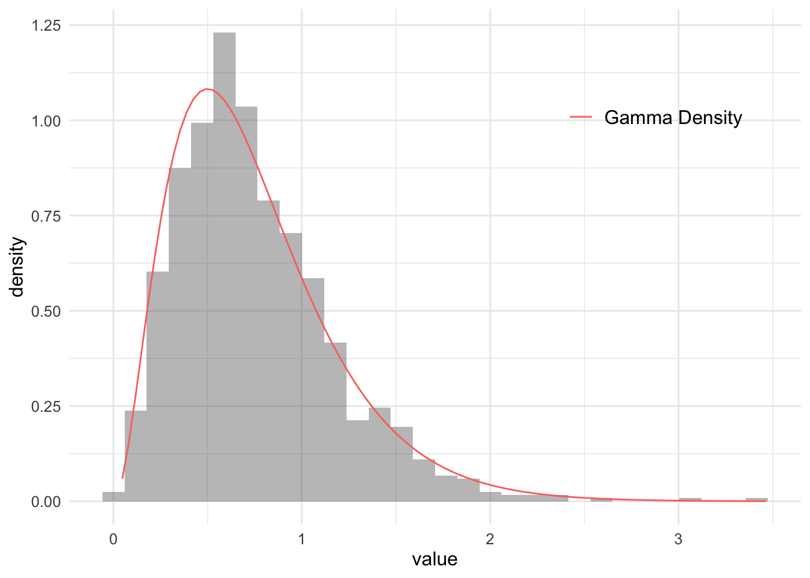

Comparing the performance of multiple machine learning models using Bayesian Hierarchical models.

Using MC Dropout to get probability intervals for neural network predictions.
Creating entity embeddings for categorical predictors using Python.

This post explores how to create a simple neural network to learn a linear function and a non-linear function using both standard R and the Torch library for R.


